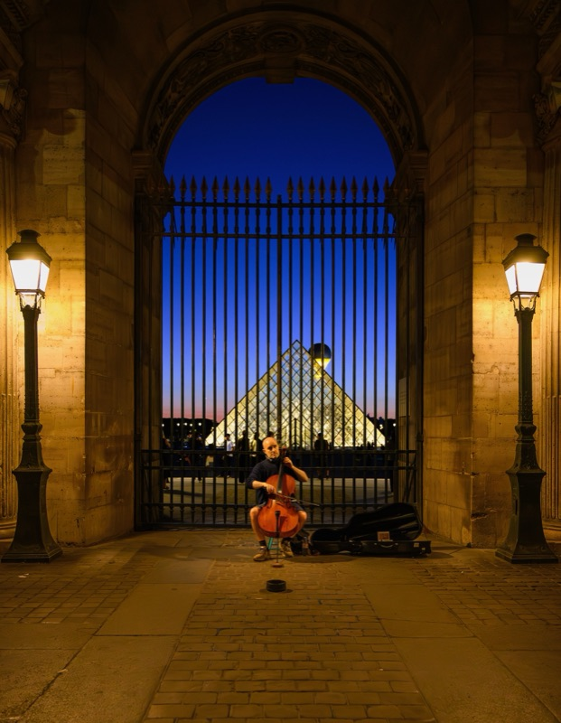
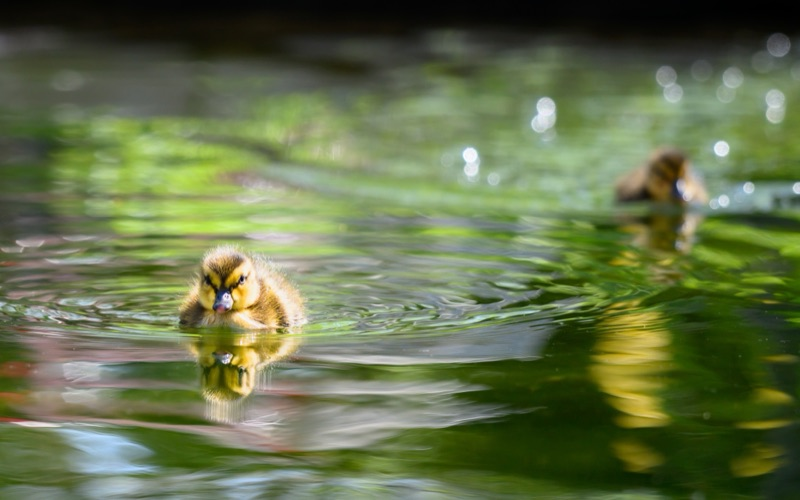
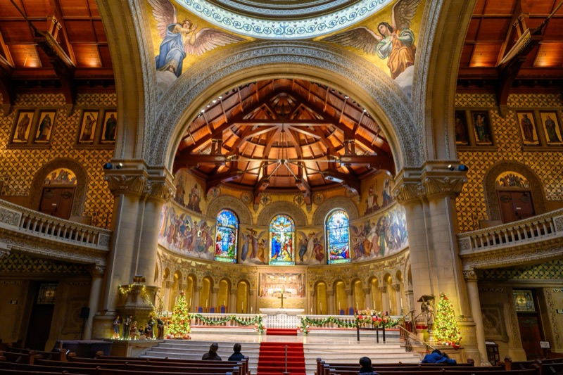
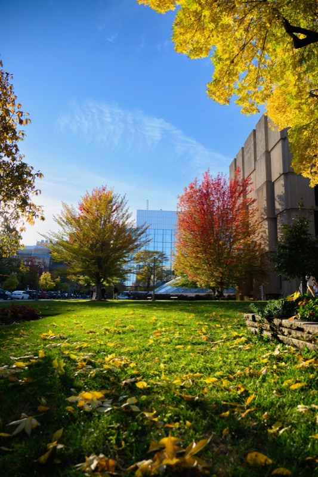
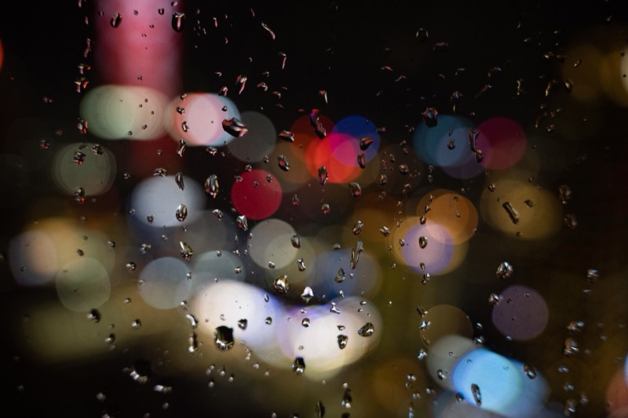
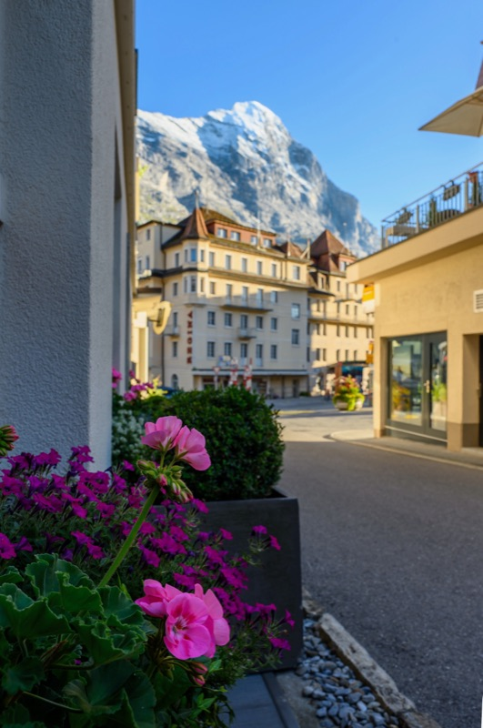
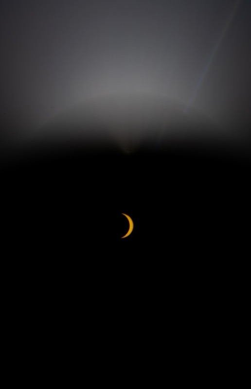
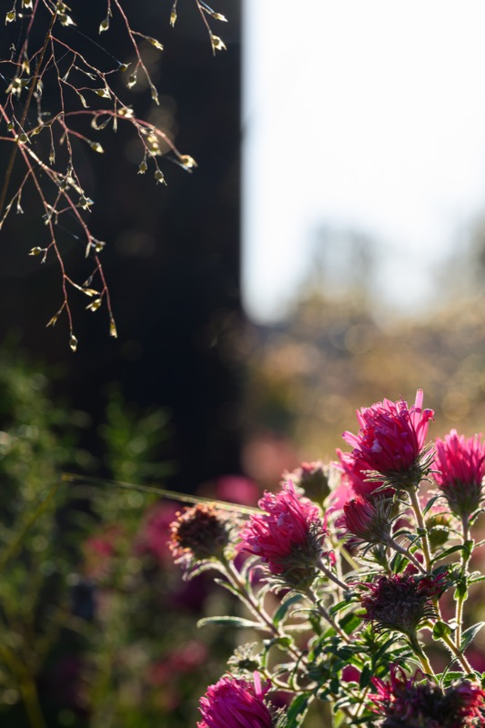
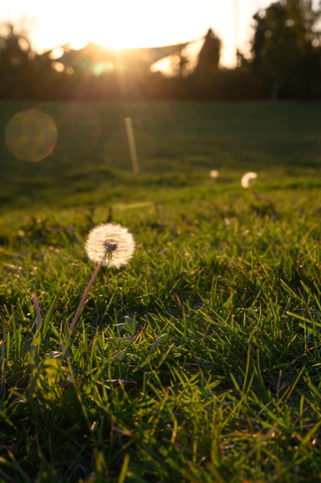

Photography
Landscapes and street scenes from China, the United States, and Europe.
26 photographs, 2022–2026
Landscapes and street scenes from China, the United States, and Europe.
26 photographs, 2022–2026








